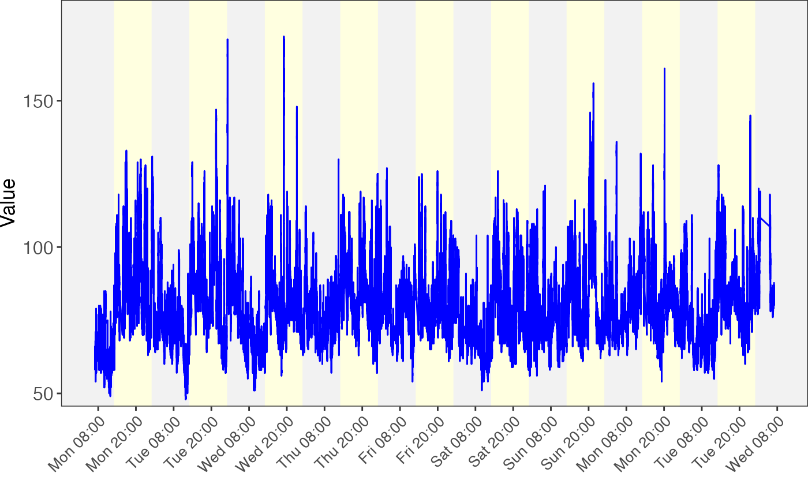
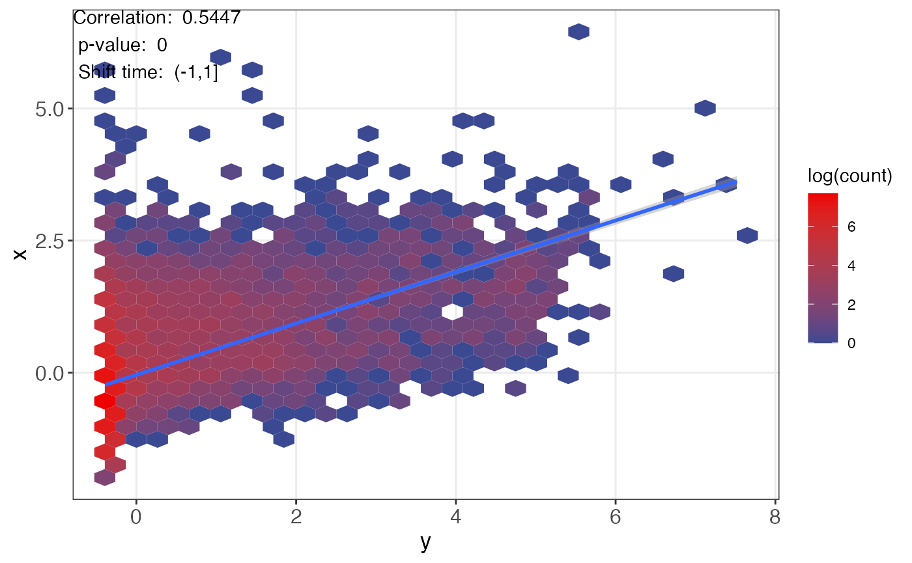

lagged_correlation.Rmdlaggedcor needs two time-series data and their corresponding time.
x: time-series 1. numeric vector.
y: time-series 2. numeric vector.
time1: time for x.
time2: time for y.
The demo data can be from laggedcor.
library(laggedcor)
data("step_data", package = "laggedcor")
data("heart_data", package = "laggedcor")
head(step_data)
#> time step
#> 1 2019-04-29 00:00:00 0
#> 2 2019-04-29 00:01:00 0
#> 3 2019-04-29 00:02:00 0
#> 4 2019-04-29 00:03:00 0
#> 5 2019-04-29 00:04:00 0
#> 6 2019-04-29 00:05:00 0
head(heart_data)
#> time heart
#> 1 2019-04-29 00:00:08 64
#> 2 2019-04-29 00:00:13 65
#> 3 2019-04-29 00:00:18 66
#> 4 2019-04-29 00:00:23 65
#> 5 2019-04-29 00:00:33 64
#> 6 2019-04-29 00:00:38 61
time_plot(x = step_data$step, time = step_data$time)
time_plot(x = heart_data$heart, time = heart_data$time)
Then we calculate the lagged correlations between step and heart rate.
The time-series data with less number of time point should be set as x.
x = step_data$step
time1 = step_data$time
y = heart_data$heart
time2 = heart_data$timeresult =
calculate_lagged_correlation(x = x,
y = y,
time1 = time1,
time2 = time2,
time_tol = 0.2,
step = 2 / 60,
min_matched_sample = 10,
threads = 5,
cor_method = "spearman")
#>
|
| | 0%
|
|============== | 20%
|
|============================ | 40%
|
|========================================== | 60%
|
|======================================================== | 80%
|
|======================================================================| 100%The parameters of calculate_lagged_correlation;
x: time-series data 1.
y: time-series data 2.
time1: time-series data time 1.
time2: time-series data time 2.
time_tol: time tolerance for time shift. Unit is hour. 0.2 means ± 0.2 hour.
step: step means the matching window, unit is hour.
min_matched_sample: Minimum for match sample number.
threads: thread number.
cor_method: spearman or pearson.
result
#> --------------------
#> Brief information
#> Shift time is x - y
#> If shift time > 0:
#> means that x is changing after y
#> If shift time < 0:
#> means that x is changing before y
#> --------------------
#> length of x: 12960
#> length of y: 91948
#> length of correlations: 11
#> length of correlations: 11
#> Max correlation index: 5
#> Global correlation index: 6
#> --------------------
#> Parameters
#> --------------------
#> pacakge_name: laggedcor
#> function_name: calculate_lagged_correlation
#> time: 2021-12-25 22:13:04
#> parameters:
#> time_tol : 0.2
#> step : 0.0333333333333333
#> min_matched_sample : 10
#> progressbar : TRUE
#> threads : 5
#> cor_method : spearmanWe can see that the index of max correlation is 11 and index of global correlation is 12, means that the max correlation is achieved from a shifted time.
extract_max_cor(object = result)
#> (-3,-1]
#> 0.5848359
extract_global_cor(object = result)
#> (-1,1]
#> 0.5446995We can see that when the shift time is “(-1.5,-0.5]”, we get the max correaltion: 0.58. This means x (step) changes before y (heart rate).
extract_all_cor(result)
#> (-11,-9] (-9,-7] (-7,-5] (-5,-3] (-3,-1] (-1,1] (1,3] (3,5]
#> 0.3881415 0.4272695 0.4677489 0.5286853 0.5848359 0.5446995 0.4711800 0.4246677
#> (5,7] (7,9] (9,11]
#> 0.3836658 0.3447499 0.3161717
extract_all_cor_p(result)
#> (-11,-9] (-9,-7] (-7,-5] (-5,-3] (-3,-1]
#> 0.000000e+00 0.000000e+00 0.000000e+00 0.000000e+00 0.000000e+00
#> (-1,1] (1,3] (3,5] (5,7] (7,9]
#> 0.000000e+00 0.000000e+00 0.000000e+00 0.000000e+00 0.000000e+00
#> (9,11]
#> 3.205407e-287
extract_shift_time(result, numeric = TRUE)
#> [1] -10 -8 -6 -4 -2 0 2 4 6 8 10
extract_shift_time(result, numeric = FALSE)
#> [1] "(-11,-9]" "(-9,-7]" "(-7,-5]" "(-5,-3]" "(-3,-1]" "(-1,1]"
#> [7] "(1,3]" "(3,5]" "(5,7]" "(7,9]" "(9,11]"
evaluate_lagged_cor(object = result, plot = TRUE)
#> $score
#> [1] 0.9973992
#>
#> $plot
lagged_scatter_plot(object = object, hex = TRUE, which = "global")
lagged_scatter_plot(object = object, hex = TRUE, which = "max")
lagged_alignment_plot(object = object, which = "global", x_limit = c(1,50000))